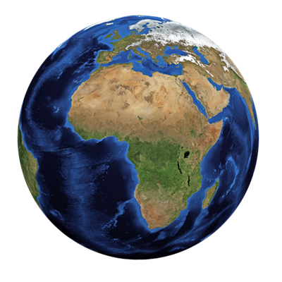
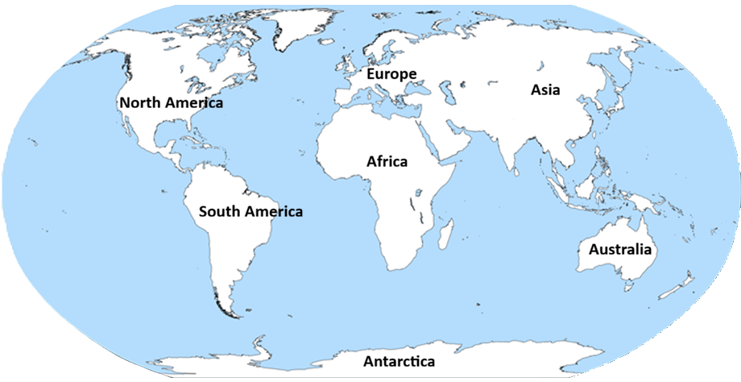
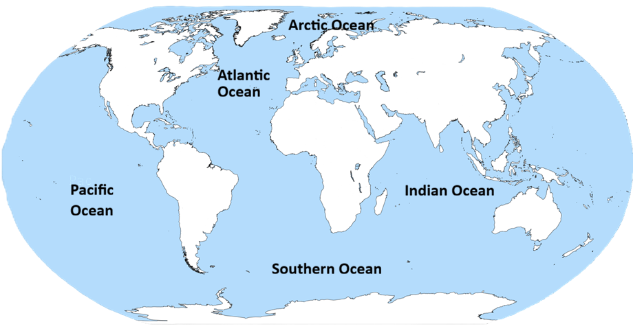
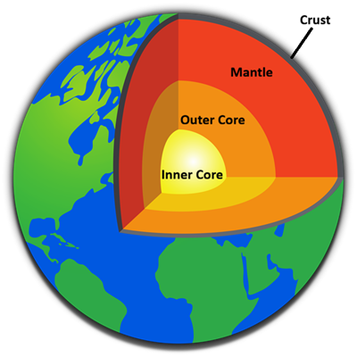

About Earth
Earth is this green and blue planet we all call home. It is the third planet from the Sun and the only astronomical object in the universe known to harbor life.

Let's play a game
Help earth avoid the asteroids
controls: up(w) down(s)
Score:
time survived:
Having a problem or see misinformation?
If there was any problems or any information that was noted wrongly on our site, please fill out this form to inform us about it.
Do a little quiz!
History
The earth didnt just come out of thin air, we used to be a flaming ball of fire. The earth was formed approximately 4.54 billion years ago. The earth's history is divided into four major eons
Timeline
Hadean - 4.54 to 4.0 billion years ago
Earth formed from the solar nebula's residual dust and gas. Shortly after, a collision with a Mars-sized planet named Theia formed our Moon. The surface was initially covered in magma, which gradually cooled to form the first oceans.
Archean - 4.0 to 2.5 billion years ago
This is when the earth cooled down enough to form continents and produced the beginnings of life on Earth. Single-celled bacteria, like Cyanobacteria, helped to make a path to what we have today
Proterozoic - 2.5 billion to 541 Million Years ago)
This eon can be divided in 3 sub-divisions
1. Paleoproterozoic(2.5B to 1.6B) - This is when bacteria like Cyanobacteria, Eukaryotes and other forms of multicellular organisms produced massive amounts of oxygen, shaping the earth's current atmosphere. This was known as the Great Oxygenation Event.
2. Mesoproterozoic(1.6B to 1B) - This period is also known as the "boring billion" with how stable the period was, having slow biological evolution, the breakup of the supercontinent Columbia, and the eventual assembly of the supercontinent Rodinia
3. Neoproterozoic(1B to 541M) - This is famously known for extreme global ice ages, the breakup of the supercontinent Rodinia, and the first appearance of complex multicellular life.
Phanerozoic - 541 Million Years ago – Present
The Phanerozoic eon can divided into three eras:
1. Palaeozoic - the era of arthropods, fishes, and the first life on land
2. Mesozoic - this spanned the rise, reign, and climactic extinction of the non-avian dinosaurs
3. Cenozoic - the rise of mammals
Continents
The land mass on earth is spilt up into 7 different regions

Asia
the largest of the 7
Africa
Africa is the world's second-largest and second-most populous continent after Asia
North America
This is where the United States of America, the 3rd most human populated country.
South America
This is where the Amazon rainforest is located
Antarctica
Earth's southernmost, coldest, driest, and windiest continent
Europe
There are quite a few counties that span across Europe and Asia. One of these counties is Russia, the largest country on earth (fun fact: 80% of its population live in the Europe part of the country even though most of the land is in Asia, Russia is considered a Europe country)
Australia
Australia is the earth's smallest traditional continent, it is regarded as both a continent and country. Sometimes people would regard this area as Oceania which is actually a broader geographic region which Australia is nested in.
Oceans
Between all that land are 5 different Oceans that separate them all

Pacific
The Pacific Ocean is the largest and deepest of Earth's five oceans. Bounded by Asia and Australia in the west and the Americas in the east.
Atlantic
The Atlantic separating the Americas from Europe and Africa. Being the second largest Ocean on earth, it is about 24% of the water surface area
Indian
The Indain oceans handles a massive share of worldwide oil and cargo shipments. It relies on critical routes like the Strait of Malacca, Strait of Hormuz, and the Suez Canal. It is located between Africa, Asia, and Australia.
Southern
While being the second smallest ocean earth have, covering 25% of total ocean surface area, the Southern Ocean takes up about 40% of all human-generated carbon dioxide absorbed by the world's oceans.
Arctic
The Arctic ocean is the polar region of Earth that surrounds the North Pole. It is almost entirely covered by water, much of it frozen.
Earth layers
The earth is made up of 4 main layers

The Crust
It is the top most layer and the most studied layer. Its only about 32km think under the continents. The temperture range of the crust is from air temperture to about 870 degrees celcius.
The Mantle
The Mantle is the largest layer of the earth. It takes up about 84% of the earth's volume. It is made up of very hot dense rock with the thickness of about 2,900 kilometers. The upper Mantle is spilt into 2 layers, the rigid lithospheric mantle (the uppermost mantle), and the more ductile asthenosphere, separated by the lithosphere-asthenosphere boundary
Outer core
The core of the Earth is like a ball of very hot metals, it is so hot that the metals in it are all in the liquid state. The outer core is located about 2,900 km below the crust and is about 2,250 km thick. It is composed of the melted metals nickel and iron.
Inner core
It is primarily a solid ball with a radius of about 1,230 km, which is about 20% of Earth's radius or 70% of the Moon's radius. The inner core of the earth has temperatures reaching so high that the metals are squeezed together and are not able to move about like a liquid. The temperatures may reach ~4,982°C. and the pressures are 45,000,000 psi.